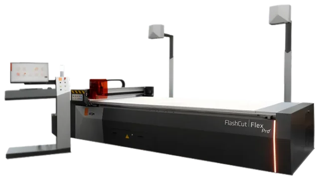
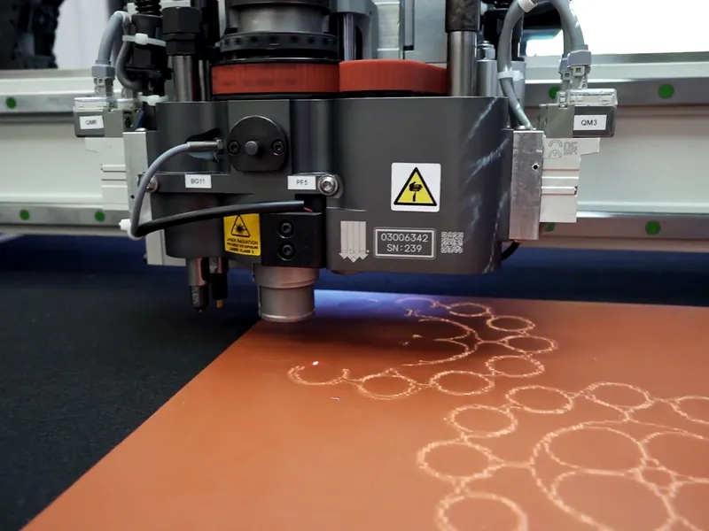
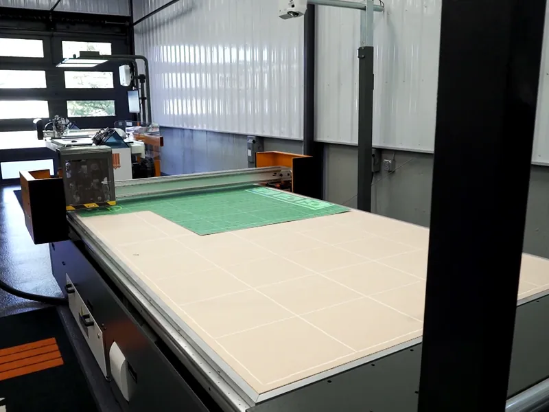

Home / Machines / Digital knife cutting
ATOM FlashCut knife cutting tables
Oscillating knife tables with a static, inclined or belt-fed surface, one or two cutting heads, and cutting areas from 1000 × 600 mm up to 6100 × 2600 mm.
ATOM FlashCut

No cutting dies to make, manage or store
Putting a FlashCut table in a design or production department removes the work of making, managing and storing cutting dies. It makes production more flexible and cuts the time it takes to make a prototype and bring the finished product to market.
ATOM counts more than 300,000 of its machines operating worldwide. Its own engineering division, with mechanical, electronic and software departments, develops new products from what the market asks for.
Cutting areas 1000 × 600 mm to 6100 × 2600 mm

Five series, one family
Every FlashCut shares the oscillating knife and ATOM’s nesting software. They differ in size, speed and how material is fed.
EASY
Easy 222, 888, 888 M25, 888 L30, 888 L35
Compact tables for sample rooms, laboratories and short to medium runs: footwear and leather goods, electronic gaskets, adhesive materials, foams, silicone rubbers and medical components.
FLEX
Flex S, Flex B, Flex 2H
Static or belt-fed surface, one or two heads, for materials up to 130 mm thick. Cuts to within ±0.1 mm on most materials.
TWINS
Twins OO, Twins EMH, Twins 3015 S
Static or belt-fed surface for materials up to 50 mm thick, built for combined jobs. Its design grew out of the FLEX installations.
SPEEDY
Speedy B, Speedy BP, Master 2185
High production: two independent multi-tool heads, with a cutting belt or a belt combined with “pinch-grab” feeding pincers.
FASHION
Fashion B, Fashion BP, Fashion All-In-One
For leather goods, footwear, automotive interiors and furniture. Two independent 5- or 7-tool heads. All-In-One models acquire, nest and cut in one machine.
Acquisition and nesting
Intelliscanner, Intelliview, Intelliscan
Digitizing systems and nesting software that place shapes automatically, raise material yield and shorten the time to lay out a job.
FlashCut EASY in figures
The EASY series descends from the ATOM G222 and G888, the swing-beam clickers and traveling head presses that shoe factories used around the world in the 1970s.
- Positioning tolerance±0.1 mm
- Cutting speed80 m/min
- Punching speed220 holes/min
- Cutting head5 or 7 tools
- Working areas (888, M25, L30)Two, independent
What FlashCut tables cut
ATOM started with leather for the footwear district around Vigevano. Today the same tables cut industrial materials.

Send MSC your material
Tell MSC what you cut, how thick it is and how many parts a day. They will match it to a FlashCut series.